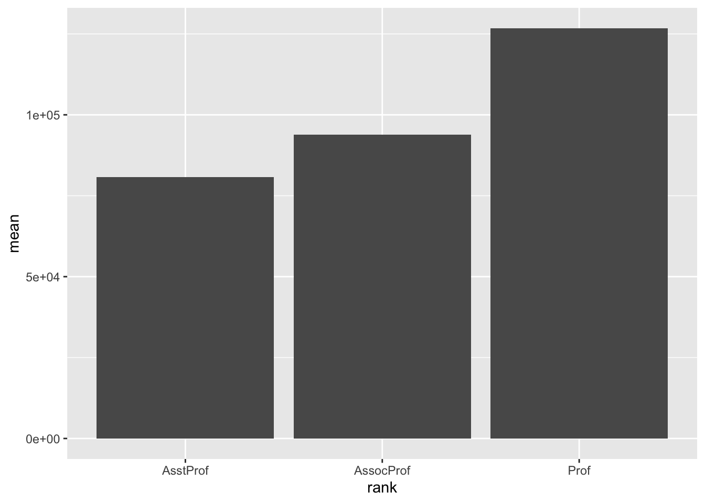
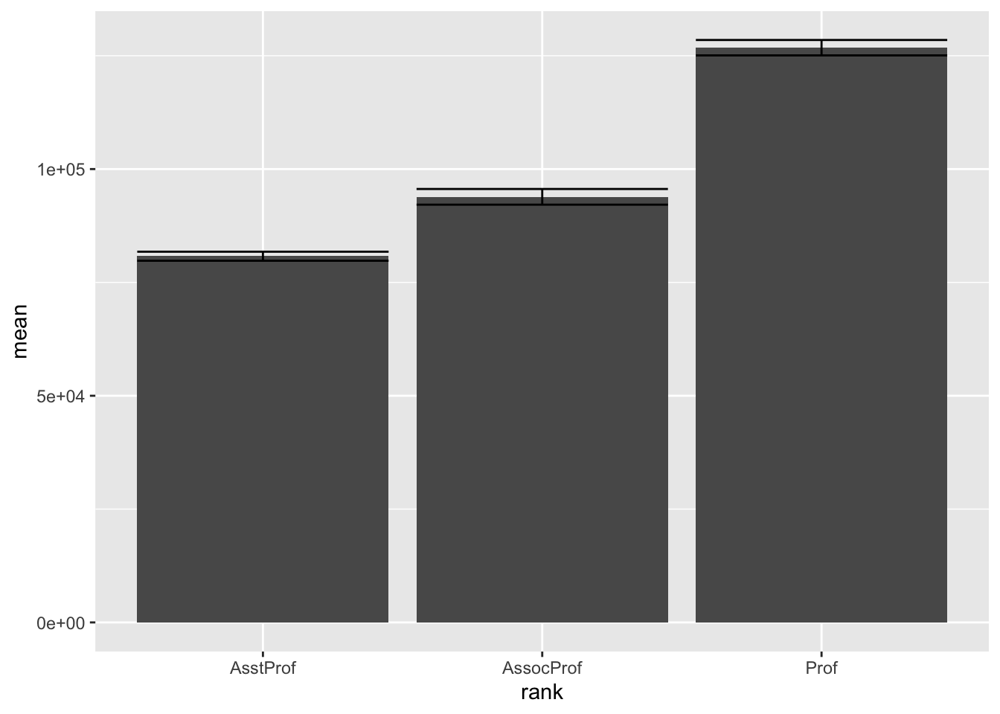
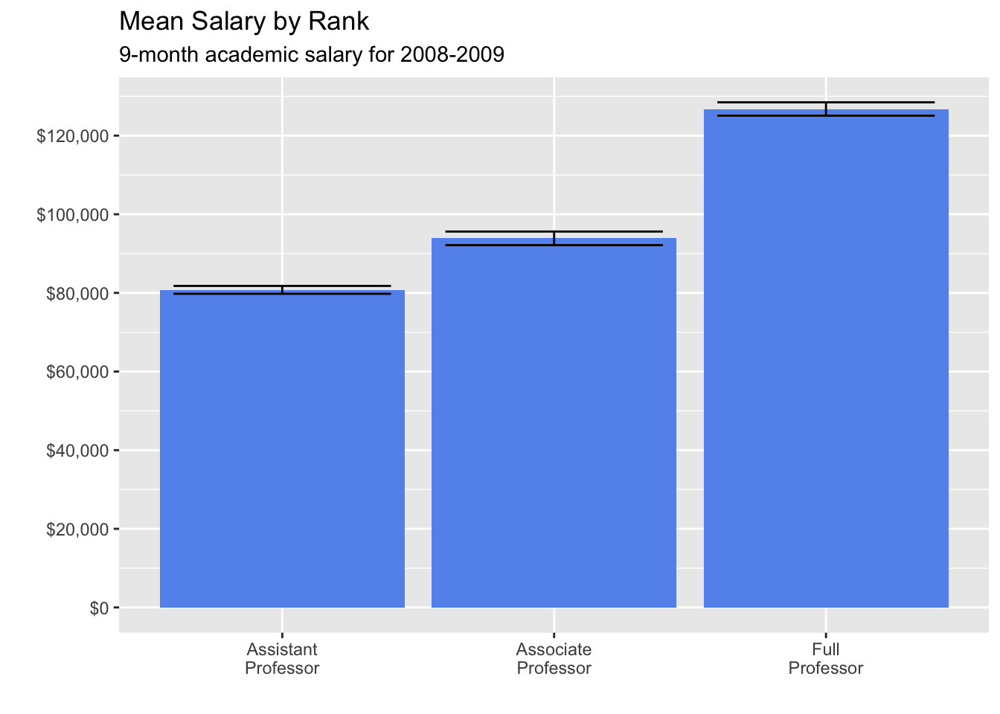
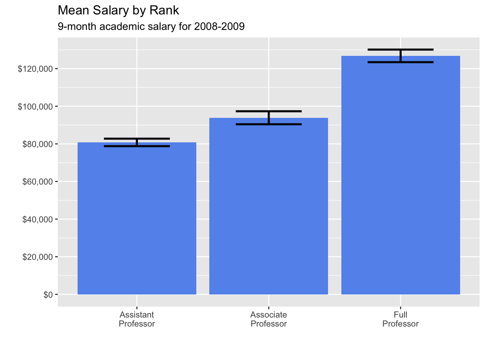

data(Salaries, package = "carData")Bar Graphs and Confidence Intervals
An example to begin
To create this bar graph we’ll start off with the dataset Salaries, which is from the package carData
To begin, make sure you have downloaded, installed, and loaded the package carData and make sure you’ve loaded the tidyverse.
library(tidyverse)Check out Data
head(Salaries) rank discipline yrs.since.phd yrs.service sex salary
1 Prof B 19 18 Male 139750
2 Prof B 20 16 Male 173200
3 AsstProf B 4 3 Male 79750
4 Prof B 45 39 Male 115000
5 Prof B 40 41 Male 141500
6 AssocProf B 6 6 Male 97000The dataset is about Professors and the salaries associated with different ranks. If you want to learn more about the dataset, remember you can type a question mark in front of it and R Studio will give you more information.
?SalariesSummary Statistics
To create a bar graph, first you need to find summary statistics for the dataset. In this case you’re going to find several descriptive statistics that will be used to make the graph.
You’ll find mean, standard deviation, standard error, and the 95% Confidence interval.
Here’s the code to use:
DesData <- Salaries |>
group_by(rank) |>
summarize(n=n(),
mean=mean(salary),
sd= sd(salary),
se=sd/sqrt(n),
ci=qt(0.975, df=n-1)*sd/sqrt(n))Check out the code here. First notice this symbol |>, which is the pipe. You can think of this symbol like a pipe or funnel. It funnels or pipes the dataset through various functions.
group_by
So we start with our dataset, Salaries and then we pipe it or funnel it by a particular variable. In this case we’ll use the function group_by and the variable rank.
This variable will almost always be a factor or categorical variable.
Then we use the summarize command to let R know what kinds of descriptive statistics we want.
- n = number of cases
- mean = mean
- sd = standard deviation
- se = standard error
- ci = confidence interval
Basic Bar Graph
Let’s start with a simple bar chart of the means
ggplot(DesData,
aes(x = rank,
y = mean)) +
geom_bar(stat = "identity")
Notice geom_bar is the geom we need for the bar chart
We have to use a special stat as well, identity. This means that bar height will be determined by the number provided by the variable assigned to the y axis. In this case the mean.
Error Bars
Next, we’ll add in error bars to bar chart, which is the geom_errorbar
ggplot(DesData,
aes(x = rank,
y = mean)) +
geom_bar(stat = "identity") +
geom_errorbar(aes(ymin=mean-se,
ymax=mean+se))
We can also change length of the error bars to make it look better.
ggplot(DesData,
aes(x = rank,
y = mean)) +
geom_bar(stat = "identity") +
geom_errorbar(aes(ymin=mean-se,
ymax=mean+se), width=.8)Bells and whistles
Then let’s add in all the bells and whistles.
- First let’s add correct column labels for the rank variable
- Second let’s add more detail to the scale of the y variable
- Finally let’s add some better labels
- For this one we’ll use the standard error
You’ll also need to add the library scales to get the proper symbol for dollars.
library(scales)
Attaching package: 'scales'The following object is masked from 'package:purrr':
discardThe following object is masked from 'package:readr':
col_factorThen you can do the graph, we’ll use the standard error for the confidence interval this time.
ggplot(DesData,
aes(x = factor(rank,
labels = c("Assistant\nProfessor",
"Associate\nProfessor",
"Full\nProfessor")),
y = mean)) +
geom_bar(stat = "identity",
fill = "cornflowerblue") +
geom_errorbar(aes(ymin=mean-se,
ymax=mean+se), width=.8) +
scale_y_continuous(breaks = seq(0, 130000, 20000),
labels = dollar) +
labs(title = "Mean Salary by Rank",
subtitle = "9-month academic salary for 2008-2009",
x = "",
y = "")
This time use the 95% Confidence Intervals
ggplot(DesData,
aes(x = factor(rank,
labels = c("Assistant\nProfessor",
"Associate\nProfessor",
"Full\nProfessor")),
y = mean)) +
geom_bar(stat = "identity",
fill = "cornflowerblue") +
geom_errorbar(aes(ymin=mean-ci,
ymax=mean+ci), width=.5, size=1) +
scale_y_continuous(breaks = seq(0, 130000, 20000),
labels = dollar) +
labs(title = "Mean Salary by Rank",
subtitle = "9-month academic salary for 2008-2009",
x = "",
y = "")Warning: Using `size` aesthetic for lines was deprecated in ggplot2 3.4.0.
ℹ Please use `linewidth` instead.